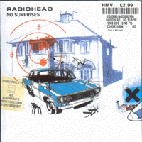
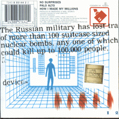
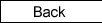
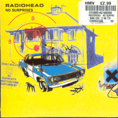
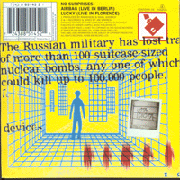
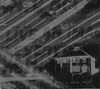

|
  |
Catalog # : NODATAS04
Reference # : 7243 8 85144 2 2
Released 01/12/98
Track Listing :
<1> No Surprises
<2> Palo Alto
<3> How I Made My Millions

|
 |
Catalog # : NODATA04
Reference # : 7243 8 85145 2 1
Released 01/12/98
Track Listing :
<1> No Surprises
<2> Airbag (live from berlin)
<3> Lucky (live from florence)

Catalog # : 12NODATA 04
Reference # : 7243 8 85144 6 0
Released 01/12/98
Track Listing :
<1> No Surprises
<2> Palo Alto
Catalog # : NODATALH 04
Reference # : ?
Released ?
Track Listing :
<1> No Surprises
<2> Palo Alto

Japanese EP released for late 1997 tour.
Catalog # : ?
Reference # : TOCP-50354
Released 12/27/97
Track Listing :
<1> No Surprises
<2> Pearly* (remix)
<3> Melatonin
<4> Meeting In The Aisle
<5> Bishop's Robes
<6> A Reminder
New Zealand
Catalog # : ?
Reference # : 7243 8 85210 2 4
Released : ?
Track Listing :
<1> No Surprises
<2> Palo Alto
<3> How I Made My Millions
<4> Airbag (live)

Dutch
Catalog # : ?
Reference # : 7243 8 84901 2 2
Released 11/??/97
Track Listing :
<1> No Surprises
<2> Meeting In The Aisle
<3> Lull
|
 |
PROMO
Catalog # : CDNODATADJ 04
Reference # : ?
Released 12/??/97
Track Listing :
<1> No Surprises